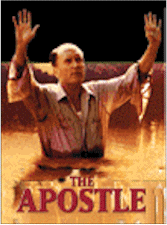

Contents | Features | Reviews | News | Archives | Store |
 |
|
| Movie Credits | Buy It! |
The Apostle
Review by Eddie Cockrell
Posted 17 December 1997
|  | Directed by Robert Duvall Starring
Robert Duvall, Farrah Fawcett, Screenplay by Robert Duvall |
"I guess you think you accomplished something in there today," a skeptical police officer asks Pentecostal preacher Euliss "Sonny" Dewey (Robert Duvall) as he shoos him away from his ministrations to two teenagers who lie bleeding and broken in a wrecked car some forty lonely miles outside of Dallas during a fragile, important scene near the beginning of The Apostle. "I know I did," says Sonny with a quiet moral certitude that, along with an impulsive kick when the cop interrupts his reading of Ezekiel ("that blood passage," the actor calls it), sets a tone of perfectly balanced ambiguity for the singular sojourn that follows. A film as centered and confident as the flawed but effusive faith of its protagonist, The Apostle accomplishes that rare thing in an art form often distracted by sensationalism: physical, emotional and spiritual veracity.
The subtle, provocative credit sequence and a few early flashbacks establish Sonny as a man born to the church who modeled his first passionate sermons after a blind preacher who impressed him as a boy. Now a dedicated man of the cloth, Sonny is one of the most popular pastors at the Temple of the Living God in New Boston, Texas. But he's also a preening, egotistical, hot-headed holy terror who spends much of his time on the road leading revival meetings and is apparently prone to dalliance, violence and drink (this all happens off-screen but is strongly hinted at). When he is home he seems to get along much better with his mother, Mrs. Dewey Sr. (June Carter Cash) and devoted friend Joe (Billy Joe Shaver) than with his wife Jessie (a revelatory Farrah Fawcett). As his mother tells a neighbor who calls to complain about Sonny's joyful noise, "Sometimes he talks to the Lord, sometimes he yells at the Lord."
When his Jessie falls in love with younger minister Horace (Todd Allen), the two engineer a palace coup that results in Sonny's ouster from the church. At first defiant, he shows up unannounced during a service in an absurd pair of aviator sunglasses to show up the scheming couple by stuffing money into Horace's jacket pocket ("it was a hundred," he corrects one parishioner who thought it was a fifty dollar bill). But his showboating inevitably turns to anger, and in a drunken fit of rage he tattoos Horace with a baseball bat in front of his horrified family at a community softball game.
With his competition "on the road to glory" – one of Sonny's many flowery phrases, this one a nice way to say "lying in a coma" – the preacher ditches his car and identification and after a chance meeting with a solitary fisherman who gives him one night of shelter winds up in Bayou Boutté, Louisiana and the parlor of retired preacher C. Charles Blackwell (John Beasley). In short order Sonny has gotten a job alongside garage mechanic Sam (Walter Goggins) working for local radio station owner Elmo (Rick Dial), is romancing Elmo's secretary Toosie (Miranda Richardson) and has changed his name to the cryptic "Apostle E.F." (Eternal Faith? Everlasting Fire? Sonny never says). Persuading the retired Brother Blackwell to join him, the Apostle and a small band of dedicated followers refurbish Blackwell's abandoned church and open The One Way Road to Heaven Holiness Temple.
As hard as the Apostle works to establish his congregation and redeem himself through single-minded devotion, he can't escape his past. When his mother dies and Horace succumbs to his injuries, it is only a matter of time – and some errant radio waves – before the police locate the church and come to take him away (they're polite enough to wait until he's finished preaching, though). As the closing credits roll, the Apostle is testifying to the roadside chain gang he's shackled to, as vocal and secure in the power of his faith as when he read Ezekiel to the couple in the wrecked car.
There are no plot twists in The Apostle, no car chases, split-second gunplay or excursions to exotic worlds. Well, check that last, as Duvall the writer-director does an extraordinary job of transporting his audience to a rural outpost of dignity and faith. This is accomplished in two ways: first, as in his previous directorial efforts, the documentary We're Not the Jet Set (1977) and the docudrama Angelo, My Love (1983), Duvall exhibits an extraordinary feel for and affection towards a milieu peopled with what might be described as cheerfully hardscrabble survivors. Particularly vivid in this new film are Zelma Loyd and Sister Jewell Jernigan as bickering parishioners who are among the most demonstrative worshipers in the Apostle's small but dedicated flock.
The second virtue of the project is sincerity: skeptics may spend the whole film waiting in vain for Duvall to drop the act, to turn from crusader to conniver, but it never happens. The Apostle is a man who believes down to his soul, and his epic struggle with his own humbling humanity recalls such great Duvall performances as Major Frank Burns in M*A*S*H (1970), Bull Meechum in The Great Santini (aka The Ace, 1979), Mac Sledge in Tender Mercies (1983 – he won an Oscar for that one) and Daddy Hillyer in Rambling Rose (1991).
Yet for all his fervent faith there's a certain hucksterism to Sonny as well, a flashy oiliness reminiscent of Burt Lancaster's Elmer Gantry (1960) and Andy Griffith's Lonesome Rhodes in the Budd Schulberg-penned A Face in the Crowd (1957) – two sources that Duvall acknowledges in the press material when he explains "one day's good, one day's bad. All I try to do is expose the percentages. A lot of these guys become corrupt as soon as they get on television or in the public eye. But there are those who don't. And there are those in the mainstream who are wonderful people. That's why I put the scene up front, helping the boy in the car crash, because the guy's a good guy. He errs, but he's not a bad guy at all. He does what he does for a living, and there are pros and cons."
Duvall's reading of the Apostle deliberately muddies the moral waters. All sass and swagger, Sonny is constantly punching at the air, breaking into a hyperactive trot and grinning off to the side as if the Lord were standing right next to him (it's a tic immediately recognizable from some of his other performances). Nowhere is this dichotomy more apparent than in his brief on-screen relationship with "The Troublemaker" (Billy Bob Thornton). After the two brawl on the church lawn following their initial meeting, the Apostle thwarts his efforts to bulldoze the church by laying his bible in front of the machine and converting the troubled man on the spot (Duvall and Thornton go back aways; the former had one mysterious, memorable scene as the latter's father in Sling Blade, while the latter co-wrote the former's laid-back duet with James Earle Jones, A Family Thing [1996]). Duvall even makes a kind of grubby carnality look good, as the Apostle's almost sinister lust for Toosie subsides gracefully when he regains control of himself. It is this very embodiment of a worldy fire and brimstone preacher, an unstable, volatile mixture of the sacred and profane, that gives the film its edge and focus.
"God bless you, you're gonna need it," someone says over the course of the film's two-plus hours (it was trimmed by between 10 and 15 minutes by the mutual agreement of director and distributor, although the cuts are undetectable). In the same vein, The Apostle needs all the attention it can muster in a noisy and crowded marketplace (Oscar-qualifying runs in New York and Los Angeles will be followed by a wider release in late January), showcasing as it does an endearingly fiery, completely original American actor at the peak of his amazing but barely containable powers. There's a Best Actor Oscar nomination in store for this movie at least, which would go a long way towards validating Robert Duvall's pure devotion to a calling that requires a volatile mixture of both passion and commitment in order to succeed (preaching is often compared to acting; tellingly, Duvall's credit is positioned onscreen just under a pulpit). A complex, rewarding story of sin, faith and contemporary redemption, The Apostle is an emotional, inspirational journey – and a formidable, lasting accomplishment.
Contents | Features | Reviews | News | Archives | Store
Copyright © 1999 by Nitrate Productions, Inc. All Rights Reserved.